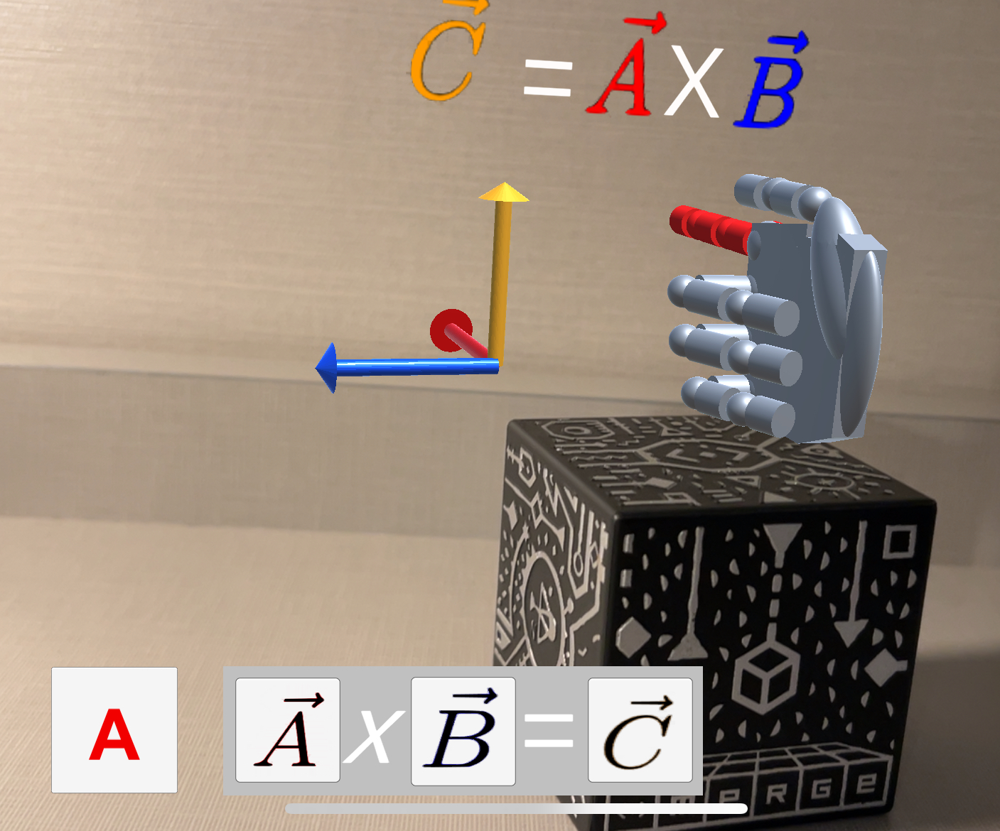
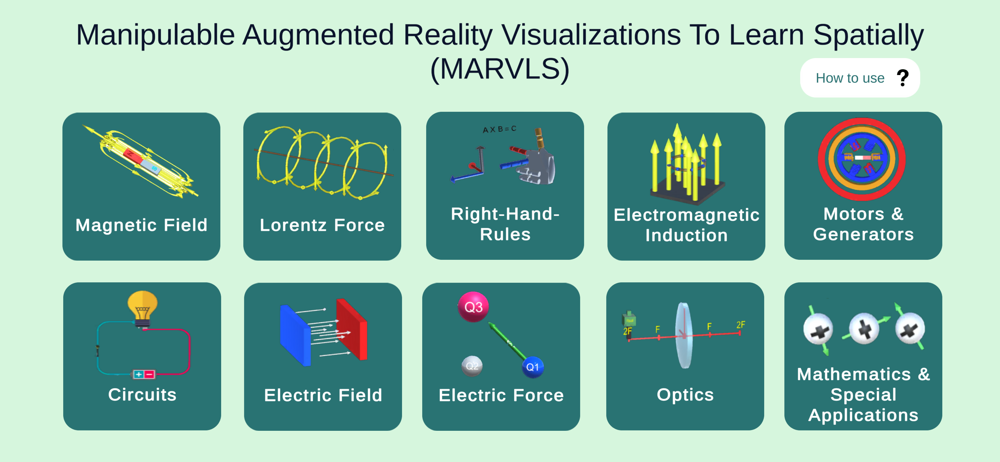

NSF IUSE Project · Award #2120446
Making invisible physics visible.
Using Augmented Reality to Improve Spatial Visualization of 3D Physics Concepts investigates how manipulable augmented reality can help students connect equations and two-dimensional representations with three-dimensional models of magnetism.

From 2D representations to 3D understanding
MARVLS gives learners an interactive way to rotate, inspect, and reason with three-dimensional physics models while connecting those models to diagrams, vectors, equations, and right-hand-rule gestures.
Visualize abstract concepts
Make magnetic fields, force vectors, current directions, and induction processes visible and manipulable.
Manipulate representations
Students rotate and reposition a physical Merge Cube while observing a registered AR model on a phone or tablet.
Connect math and physics
Interactive cues help learners coordinate symbolic equations, physical meanings, gestures, and spatial representations.

MARVLS AR for Physics 2
The NSF-supported magnetism work is implemented within MARVLS AR for Physics 2, a free mobile app designed for interactive exploration of electricity and magnetism concepts.
Students use a smartphone or tablet with a Merge Cube to view and manipulate augmented-reality models while working through guided activities.
Interactive topics across introductory E&M
The project uses AR models and lessons to support reasoning about concepts that are spatial, vector-based, and difficult to represent fully on a flat page.
Magnetic Fields
Explore field direction, field-line structure, and spatial relationships.
Current-Carrying Wires
Connect conventional current, electron flow, and circular magnetic fields.
Right-Hand Rules
Coordinate gestures with vectors and 3D model orientation.
Lorentz Force
Reason about velocity, magnetic field, charge, and force vectors.
Biot–Savart Law
Relate local differential field vectors to the global circular field.
Electromagnetic Induction
Investigate magnetic flux, induced current, and Lenz’s law.

A resource for instructors, students, and education researchers
This site is intended for undergraduate physics instructors, students, and physics and engineering education researchers interested in augmented reality, spatial visualization, and the teaching and learning of three-dimensional physics concepts.
Explore classroom-ready lessons, project publications, and examples of how MARVLS has been used to study student conceptual reasoning.